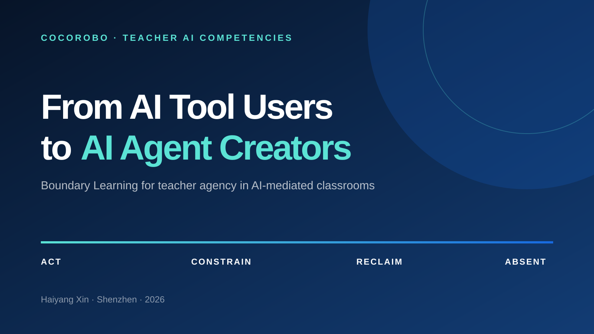
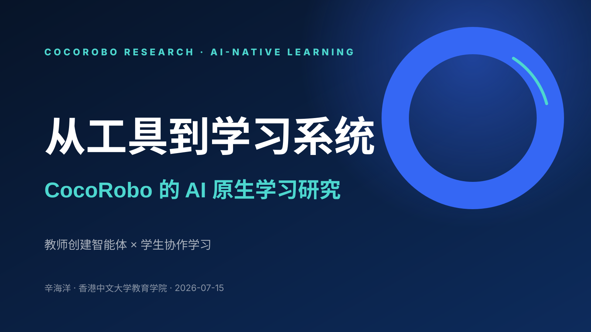
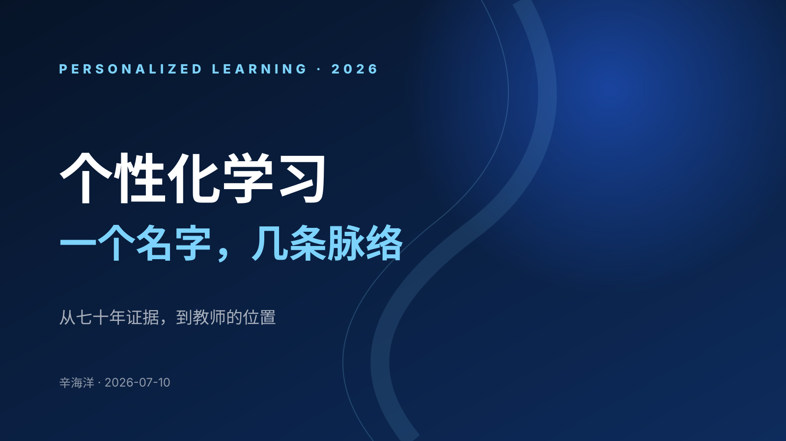
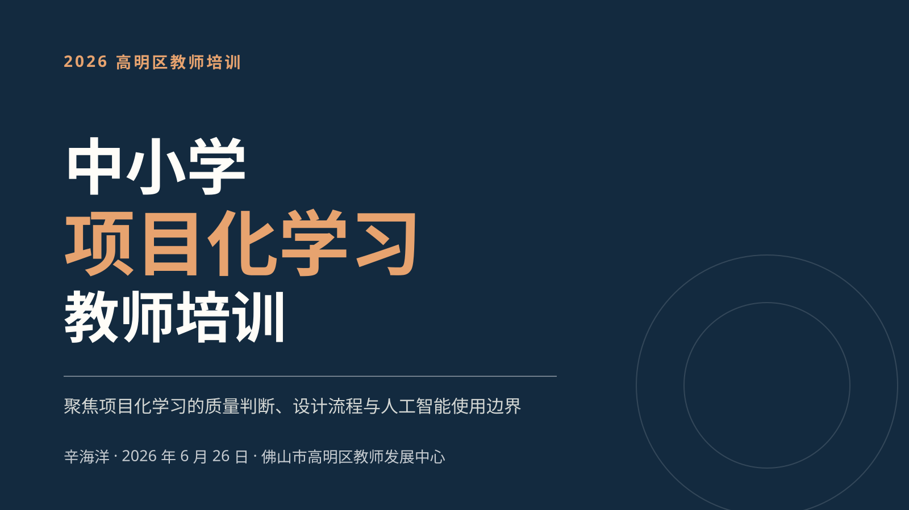

01 / 08 公开BOUNDARY LEARNING · TEACHER AI
From AI Tool Users to AI Agent Creators
↗展示深圳教师如何从使用 AI 工具走向创设并治理教学智能体，并以边界学习保护教师能动性与学生思考。英中法三语，默认英文。
举办地点UNESCO 总部，巴黎
PRESENTATIONS
按讲座时间从新到旧排列，列明内容摘要、讲座日期、举办地点与独立访问链接。

01 / 08 公开BOUNDARY LEARNING · TEACHER AI
展示深圳教师如何从使用 AI 工具走向创设并治理教学智能体，并以边界学习保护教师能动性与学生思考。英中法三语，默认英文。
 02 / 08
公开
02 / 08
公开
AGENTIC AI · SYSTEM EVOLUTION
梳理 Agentic AI 从对话界面走向工作系统的演化，并说明 Context、Harness 与 Loop 如何重塑 AI-native 教育产品。
 03 / 08
公开
03 / 08
公开
COCOROBO · ORGANIZATION STRATEGY
从生成能力商品化出发，提出以真实问题、可信证据和持续运行系统为核心的 CocoRobo 产品与组织转型路线。

04 / 08 公开COCOROBO RESEARCH · AI-NATIVE LEARNING
围绕教师创建教学智能体与学生协作学习，呈现 CocoRobo AI 原生学习系统的研究体系、连续证据与适用边界。

05 / 08 公开PERSONALIZED LEARNING · EVIDENCE & PRACTICE
从七十年证据、学习科学与生成式 AI 出发，梳理个性化学习的三条传统、四种形态与教师不可替代的设计责任。
 06 / 08
公开
06 / 08
公开
AI-NATIVE · INTERDISCIPLINARY LEARNING
介绍如何把课件升级为互动课堂，并以智能体、H5、课堂互动和智能总结连接备课、课中与课后，让老师始终掌握教学主导权。

07 / 08 公开教师培训 · 项目化学习
围绕真实问题与核心知识，系统说明项目质量判断、五步设计流程及 AI 介入与退出边界。
 08 / 08
公开
08 / 08
公开
EDUHK · DOCTORAL FORUM
透过两部电影理解“老师—AI—学生”的三元关系，并进一步讨论关系、责任、摩擦与多智能体协作学习。
未找到符合当前条件的演讲。